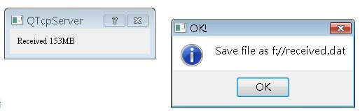

QTcpSocket 用來與遠端伺服器連線，如果您要接受客戶端連線，則使用QTcpServer，QTcpServer使用listen()方法開始傾開所指定的連接埠，您 可以使用isListening()方法測試是否正在傾聽連線，當連線發生時，QTcpServer會發出newConnection()的 Signal，您可以使用QTcpServer的nextPendingConnection()取得代表客戶端連線的QTcpSocket物件，接下來 就可以使用它來與客戶端進行資料傳輸。
配合 QTcpSocket 中的範例，以下製作一個ServerDialog來接受客戶端的檔案傳送，首先是ServerDialog的定義：
- ServerDialog.h
#ifndef SERVERDIALOG_H
#define SERVERDIALOG_H
#include <QDialog>
#include <QTcpServer>
class QLabel;
class QFile;
class QTcpSocket;
class ServerDialog : public QDialog {
Q_OBJECT
public:
ServerDialog(QWidget *parent = 0);
void setReceivedFileName(QString fileName);
void listen(quint16 port);
public slots:
void acceptConnection();
void updateProgress();
void displayError(QAbstractSocket::SocketError socketError);
private:
QLabel *label;
QTcpServer server;
QTcpSocket *clientConnection;
int bytesReceived;
QFile *file;
};
#endif當連線發生時，QTcpServer會發出newConnection()的 Signal，程式中將之連接至acceptConnection()，而每當有資料可以準備讀取時，代表客戶端連線的QTcpSocket會發出 readyRead()信號，這將之連接至updateProgress()，當中將進行檔案儲存與目前接受容量顯示，以下為實作內容：
- ServerDialog.cpp
#include <QApplication>
#include <QProgressBar>
#include <QVBoxLayout>
#include <QHostAddress>
#include <QLabel>
#include <QAbstractSocket>
#include <QTcpSocket>
#include <QMessageBox>
#include <QFile>
#include <iostream>
using namespace std;
#include "ServerDialog.h"
ServerDialog::ServerDialog(QWidget *parent) : QDialog(parent) {
label = new QLabel("Received:");
QVBoxLayout *layout = new QVBoxLayout;
layout->addWidget(label);
this->setLayout(layout);
connect(&server, SIGNAL(newConnection()),
this, SLOT(acceptConnection()));
}
void ServerDialog::setReceivedFileName(QString fileName) {
file = new QFile(fileName);
}
void ServerDialog::listen(quint16 port) {
server.listen(QHostAddress::Any, port);
}
void ServerDialog::acceptConnection() {
if (!file->open(QIODevice::WriteOnly)) {
cerr << "Unable to write the file" << endl;
delete file;
file = 0;
return;
}
clientConnection = server.nextPendingConnection();
connect(clientConnection, SIGNAL(readyRead()),
this, SLOT(updateProgress()));
connect(clientConnection, SIGNAL(error(QAbstractSocket::SocketError)),
this, SLOT(displayError(QAbstractSocket::SocketError)));
server.close();
QApplication::setOverrideCursor(Qt::WaitCursor);
}
void ServerDialog::updateProgress() {
bytesReceived += (int) clientConnection->bytesAvailable();
file->write(clientConnection->readAll());
QString txt = "Received %1MB";
label->setText(txt.arg(bytesReceived / (1024 * 1024)));
}
void ServerDialog::displayError(QAbstractSocket::SocketError socketError) {
file->close();
if (socketError == QTcpSocket::RemoteHostClosedError) {
QMessageBox::information(this,
"OK!", "Save file as " + file->fileName());
}
else {
QMessageBox::information(this, "Network error",
"The following error occurred: " + clientConnection->errorString());
}
delete file;
file = 0;
QApplication::restoreOverrideCursor();
}您可以用以下方式來使用ServerDialog：
ServerDialog *server = new ServerDialog;
server->setReceivedFileName("f://received.dat");
server->listen(9393);
server->setWindowTitle("QTcpServer");
server->resize(200, 10);
server->show();
server->setReceivedFileName("f://received.dat");
server->listen(9393);
server->setWindowTitle("QTcpServer");
server->resize(200, 10);
server->show();
下圖為執行時的參考畫面：
